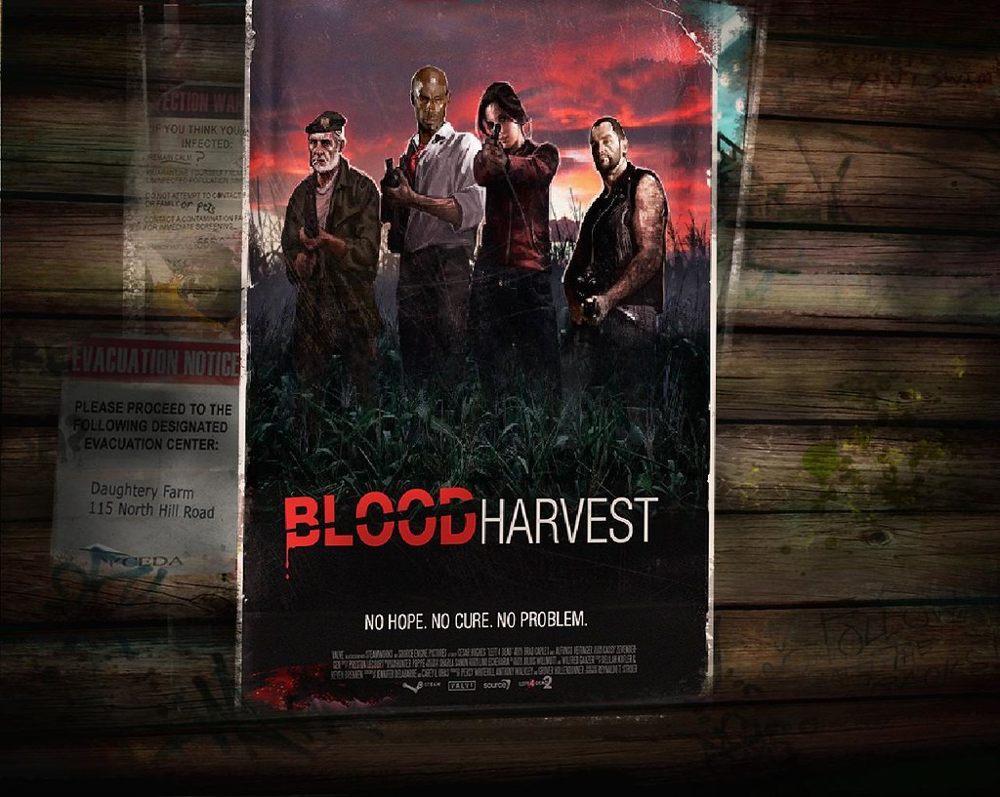
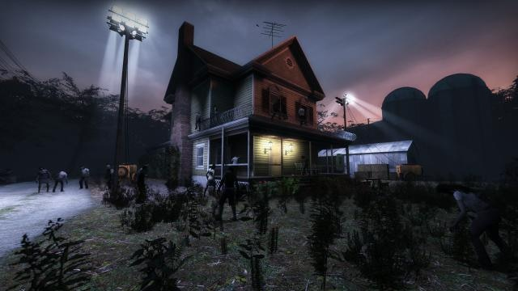

La campaña Blood Harvest comienza con los sobrevivientes originales: Bill, Zoe, Francis y Lewis intentando encontrar un escape a través de un bosque. El objetivo es llegar a una base militar donde creen encontrar seguridad y una oportunidad para escapar.

Los sobrevivientes tienen que atravesar el bosque sobreviviendo a los zombis que les acechaban entre los árboles. Cuando finalmente salen del bosque encuentran una pequeña cabaña que les sirve de refugio temporal.
Tras descansar en la cabina, los sobrevivientes continuaron viajando hasta llegar a un túnel ferroviario. Ese lugar era oscuro y lleno de autos abandonados. Principalmente deben atravesar el túnel y llegar a la salida donde hay una estación de tren abandonada siendo su nuevo refugio nuevamente.
Saliendo del su refugio los sobrevivientes encontraron un puente ferroviario donde tuvieron que enfrentar a grandes oleadas de zombis. Después de llegar al otro lado, los sobrevivientes encontraron otro refugio en una torre de vigilancia y después de descansar y abandonar la torre de vigilancia los sobrevivientes se encontraron en una zona industrial donde hay edificios industriales y puertos abandonados.
El final de la campaña tiene a los sobrevivientes en una granja , donde deben encender la radio para llamar a vehículos militares de rescate. Esta campaña finaliza cuando el vehículo de rescate llega a la granja y los sobrevivientes corren hacia los coches, escapando de la última horde que los despidio de la granja.
